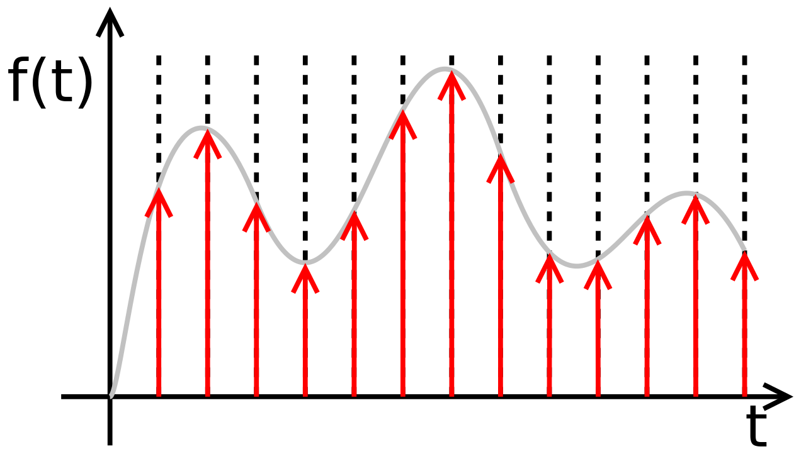

Below is a list of the technical skills I currently have. It may not always be up-to-date, since I am always trying to learn more!
Python
Over the last 6 years, I have had extensive experience using Python while doing personal projects, research, and coursework.
This experience made me familiar with the Python scientific ecosystem, including but not limited to libraries like scikit-learn, NumPy, pandas, Matplotlib and Jupyter Notebook.
Furthermore, I have also used setup tools and Twine to convert projects into fully-functioning Python packages.
Machine Learning
In the last 6 years, I have gained in-depth experience in artificial intelligence/machine learning.
Across multiple internships and personal projects, I have learned about and implemented a variety of algorithms
spanning a wide range of ML fields. Besides the Python scientific ecosystem, I am also well-versed with PyTorch, Tensorflow, and Keras.
Computer Vision
In the field of computer vision, I have utilized CNNs for a variety of classification problems (sometimes implementing them from scratch),
and have significant experience.
There are even times I have used them for unconventional applications such as CNNs for time series analysis.
Besides this, I have also worked with image processing techniques from OpenCV, Albumentations, SciPy, skimage, etc.
Natural Language Processing
NLP is one of my favorite fields, and I have both practical and research experience in it.
I have worked with GPT-2, Google T5, NL2SQL, Transformers (BERT), Stable Diffusion, GANs, RNNs, and many more.
Fancy pre-trained models aside, I have also worked professionally with toolkits like SpaCy, NLTK, and Stanford NLP to implement more traditional techniques.

Signal Processing
Signal processing is another field that I quite enjoy. The main goal of my award-winning research project for ITU was the classification of DPI probe signals using LSTMs and XGBoost. Moreover,
I have developed other models for the analysis of measuring equipment readings, audio signals, and stock prices. I am familiar with signal processing libraries like sktime, tsfresh, and librosa.
Similarly, I have gained some exposure to MATLAB as a result of coursework, and can do basic signal analysis and transformation with it (e.g. FFT).
LaTeX
I have been writing formal articles in LaTeX since my brief run in the 2016 IBM Watson AI XPRIZE when I was in high school :).
Since then, it has become my preferred word processor for any kind of writing, to the point of using it frequently even for university assignments.
My resume is made in LaTeX too!